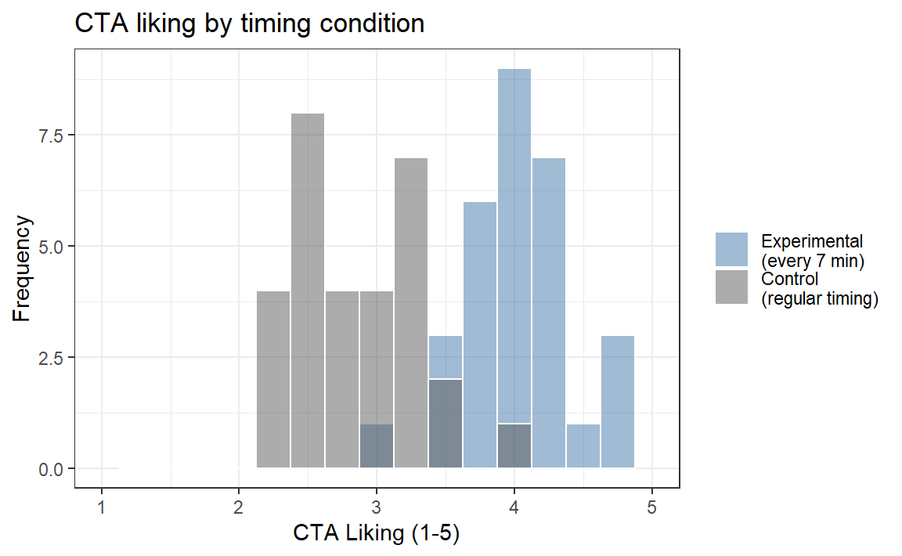
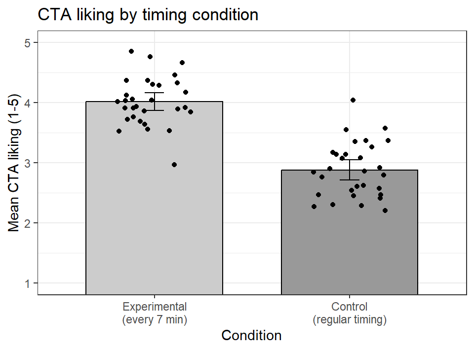

set.seed(343)
n = 30
CTA.SD = 0.5
# Control group (mean ~ 3, the neutral answer Chapter 5 found)
CTA.Control <- rnorm(n, 3, CTA.SD)
# Experimental group (mean ~ 4)
CTA.Experimental <- rnorm(n, 4, CTA.SD)8 Independent Samples t-Test
NoteTwo Groups, and Now Both of Them Bounce
Use an independent-samples t-test when two different sets of people are each measured once and you want to know whether the groups differ.
This is the workhorse of experimental psychology. Two groups, one measurement each, and random assignment deciding who went where. A very large share of the experiments you will read are exactly this shape, which means you will spend far more of your career reading this test than running it.
Chapter 6 compared one group against a number someone handed us. That number was fixed and given to us, something that rarely occurs in real research. Now both sides of the comparison are estimates, both of them jump around a little, and the standard error has to carry the uncertainty of two means instead of one. That is the entire structural change. Everything else you already learned still applies.
8.1 The Research Question
The CTA already paid me once to ask riders how they feel about the CTA. The answer came back somewhere around “fine, I guess,” which is the most Chicago answer available. Now they want to know whether they can buy a better answer.
So: what happens if the trains actually show up every 7 minutes?
8.1.1 Design
Two groups of riders, assigned by chance, not by preference.
- Control: regular CTA timing, where “scheduled” is a flexible concept.
- Experimental: trains every 7 minutes. Like clockwork. Almost suspiciously efficient.
Nobody rides both schedules. Each rider contributes one number and goes home. That is what makes these groups independent, and it is the entire reason this chapter’s test is the right one.
8.1.2 Dependent Variable
The same question I asked back in the standard error chapter, on the same 1-5 bipolar Likert scale, so that the two studies can actually talk to each other:
How much do you typically like traveling on the CTA?
- 1 = Strongly dislike
- 2 = Dislike
- 3 = Neither dislike nor like
- 4 = Like
- 5 = Strongly like (you now defend the CTA on the internet)
We expect the control group to land near 3, which is exactly where Chapter 5 found riders sitting, and the experimental group near 4, assuming the manipulation works at all.
I know those numbers because I am about to simulate them, which is the only situation in which I ever know the truth in advance. In a real study we can only hypothesize that the experimental group will be different from the control group, and then go find out.
8.2 Step 1: State the Hypotheses
\[ H_0: \mu_1 = \mu_2 \]
\[ H_1: \mu_1 \neq \mu_2 \]
Where:
- \(\mu_1\) = Experimental (7-minute trains)
- \(\mu_2\) = Control (regular timing)
Under the null, \(\mu_1 - \mu_2 = 0\). Why? Cause if nothing is happening, \(3 - 3 = 0\).
8.3 Step 2: Collect the Data
Two groups, thirty riders each. Those two rnorm() lines are the entire experiment. I mean I could go out and really get data, but again I would have to actually talk to people.
We also stack the two groups into one data frame, because that is the shape R wants when you use formula syntax later (and the shape your lab data will arrive in).
CTA.df <- data.frame(
Condition = c(rep("Control\n(regular timing)", n),
rep("Experimental\n(every 7 min)", n)),
Liking = c(CTA.Control, CTA.Experimental)
)
# R subtracts groups in factor-level order, so we put Experimental first
# to match the way we wrote the hypotheses in Step 1.
CTA.df$Condition <- factor(CTA.df$Condition,
levels = c("Experimental\n(every 7 min)",
"Control\n(regular timing)"))
Already you should see separation. But eyeballing histograms is not a statistical test (even if it seems obvious). Notice the overlap in the middle: some control riders liked the CTA more than some experimental riders did. A group difference is about where the two piles sit, not about every person in one group beating every person in the other. Group differences are what we care about here, and we do not actually concern ourselves with the feelings of individual people. What are we, psychologists?! Oh wait…we are…okay, let me rephrase that…
Individual commoners, I mean subway riders, all have very different experiences and attitudes toward the subway and toward the new schedule. Maybe some people like the chaos of the old system, or are freaked out by clockwork timing. What are we, Switzerland?! Each person has their reasons, and we are not clinical psychologists (well, I am not, that is for sure) who need to unpack why any one of them feels that way.
NoteWho Are We Doing Research to Explain?
The goal of most experimental research is to understand how a treatment would affect the average person. Remember that average person from the distribution chapter? That is who our result is about, and it is worth stopping to ask who they actually are.
This is not easy here, cause I am randomly sampling subway riders. Does the time of day matter? What if I collected at rush hour instead of 3am on the Red Line? What if I only rode the Brown Line above the Loop, in the more affluent neighborhoods? Never forget who your sample is and who your average represents. It is what limits the scope of your results and how far they generalize.
8.4 Step 3: Compute the Standard Error
For Welch’s t-test, which R uses by default, the standard error is:
\[ S_{M_1-M_2}=\sqrt{\frac{S_1^2}{n_1}+\frac{S_2^2}{n_2}} \]
ImportantThe Subscript Is a Name Tag, Not an Instruction
That \(M_1-M_2\) hanging off the bottom of the \(S\) is not telling you to subtract anything. Nothing is being subtracted. It is a label.
Back in the standard error chapter we wrote \(S_M\), meaning “the standard error of \(M\),” or in plain English, how much a sample mean bounces around from study to study. The subscript names which statistic we are describing. Same idea here. The statistic we care about now is no longer a single mean, it is the gap between two means, so the label is \(M_1 - M_2\). Read the whole symbol out loud as “the standard error of the difference between the means” and it stops being intimidating.
Now look at what the formula actually does, because this is the part worth stopping for. The label says difference, but the arithmetic adds. Both variances go in with a plus sign.
That is not a typo. Group 1 is a guess and bounces around (varies due to chance). Group 2 is also a guess and bounces around. When you subtract two “bouncy” numbers, the bounce does not politely cancel out, it piles up like two waves at the beach. You are now uncertain about where the first mean sits and uncertain about where the second one sits, and both of those doubts make the gap between them harder to trust. Uncertainty accumulates.
Welch’s test does not assume equal population variances. In other words, we do not have to assume that people riding the chaotic subway and people riding the clockwork subway have the same amount of variance. Why would that matter, and why would the variances be different?
Imagine the chaotic subway causes more varied feelings: some riders LOVE it and some HATE it. The clockwork one does not draw opinions that strong, so people give a narrower range of ratings. Now suppose that by pure luck you sampled too many of the HATE it crowd on the chaotic subway. It would make you think the chaotic system was more hated than it really is.
So Welch’s t-test corrects this problem by shrinking our estimate of the degrees of freedom (df). Remember that our df sets the critical values of the t-distribution. By shrinking our df, we push those critical values further out into the tails of the distribution, so a result has to be more extreme before we are allowed to make our decision. Thus we make our test more conservative, harder to say something is there when it is not. Remember type I error, which is a bad thing to do.
TipLayers of Knowledge, and Why Your Brain Is Not Broken
Have you noticed that in this one section I had to call back to degrees of freedom, the t-distribution, type I error, and several other concepts? This is the part about statistics that freaks people out. You have to actually remember what you learned before.
So if you are lost, go back to those chapters and review. It is normal to need to go back. I keep the regression bible written by Cohen on my desk and have to refer to it all the time.
So how do we actually shrink our degrees of freedom? We use the Welch–Satterthwaite approximation, which R will calculate because we have suffered enough.
For fun, here is that formula. It is a crazy formula that you never want to calculate by hand:
\[ df \approx \frac{\left(\dfrac{S_1^2}{n_1}+\dfrac{S_2^2}{n_2}\right)^2} {\dfrac{\left(S_1^2/n_1\right)^2}{n_1-1}+\dfrac{\left(S_2^2/n_2\right)^2}{n_2-1}} \]
Notice the \(\approx\). This one does not even pretend to land on a whole number, which is why Welch’s degrees of freedom for our study come out as 57.09 instead of a respectable integer. Nobody sits down and computes this. R does it, and we let it.
What if you do not have access to R and have to do all the calculations the old fashioned way, by hand, with a pencil and paper? Gasp, the horror.
What we do instead is use the classical pooled-variance version, the standard error is:
\[ S_{M_1-M_2}=\sqrt{S_p^2\left(\frac{1}{n_1}+\frac{1}{n_2}\right)} \]
This represents how much variability we expect in the difference between means due to sampling error. The pooled version combines the two sample variances:
\[ S^2_p = \frac{SS_1 + SS_2}{df_1 + df_2} \]
8.5 Step 4: Compute the t Statistic
\[ t = \frac{M_1 - M_2 - (\mu_1 - \mu_2)}{S_{M1 - M2}} \]
For the pooled-variance test, the degrees of freedom are:
\[ df = (n_1 - 1) + (n_2 - 1) \]
Those formulas are not decoration, so let’s run them. This is the same arithmetic you would do on paper:
M1 <- mean(CTA.Experimental)
M2 <- mean(CTA.Control)
S1 <- sd(CTA.Experimental)
S2 <- sd(CTA.Control)
SS1 <- sum((CTA.Experimental - M1)^2)
SS2 <- sum((CTA.Control - M2)^2)
Sp2 <- (SS1 + SS2) / ((n - 1) + (n - 1)) # pooled variance
SE_pooled <- sqrt(Sp2 * (1/n + 1/n)) # SE of the difference
t_by_hand <- (M1 - M2) / SE_pooled
c(Sp2 = Sp2, SE_pooled = SE_pooled, t_by_hand = t_by_hand) Sp2 SE_pooled t_by_hand
0.1859524 0.1113410 10.2132925 Now let R do the same arithmetic. Here it is in formula syntax, outcome ~ group, which is what you will do in lab (if you take more courses, that is) and what every regression in Part 2 of the book will use:
# The classical pooled test: matches the hand calculation above
t.test(Liking ~ Condition, data = CTA.df, var.equal = TRUE)
Two Sample t-test
data: Liking by Condition
t = 10.213, df = 58, p-value = 1.412e-14
alternative hypothesis: true difference in means between group Experimental
(every 7 min) and group Control
(regular timing) is not equal to 0
95 percent confidence interval:
0.9142852 1.3600318
sample estimates:
mean in group Experimental\n(every 7 min)
4.016756
mean in group Control\n(regular timing)
2.879597 Same number. The machine just does math faster.
R uses Welch’s t-test by default because it does not require the two populations to have equal variances. That is usually the safer choice. The pooled formula above is still useful because it makes the basic machinery visible, but we should not force equal variances merely because ancient papers did it that way. Also, we have these things called computers now. We do not do this by hand anymore.
# Welch: drop var.equal and R defaults to the safer test
CTA.t.test <- t.test(Liking ~ Condition, data = CTA.df)
CTA.t.test
Welch Two Sample t-test
data: Liking by Condition
t = 10.213, df = 57.093, p-value = 1.693e-14
alternative hypothesis: true difference in means between group Experimental
(every 7 min) and group Control
(regular timing) is not equal to 0
95 percent confidence interval:
0.9142098 1.3601072
sample estimates:
mean in group Experimental\n(every 7 min)
4.016756
mean in group Control\n(regular timing)
2.879597 Look at what changed between the two outputs, and what did not. The \(t\) statistic is identical here, because both groups have exactly 30 people. Only the degrees of freedom moved, from a tidy 58 down to Welch’s fractional 57.09. Welch spends a fraction of a degree of freedom as insurance against unequal variances. When the groups are the same size and the spreads are similar, that insurance is nearly free, which is a good reason to just leave it on.
If trains truly arrive every 7 minutes, we should see a statistically significant increase in liking.
8.6 What This Test Assumes
Four things, and they are not equally dangerous.
Independence. Each rider answers alone. If you survey five friends traveling together, you have one opinion wearing five coats, and the model, which believes it met five strangers, becomes confident in ways it has not earned. This is the assumption that actually kills studies, and no amount of statistical fanciness resurrects them. When you genuinely cannot avoid it, because you measured the same person twice or sampled whole classrooms, you need a model that knows about the grouping, which is where mixed models come in later.
Random assignment. Nothing about the arithmetic knows how riders ended up in their groups. The reason we can talk about the 7-minute schedule causing anything is that chance built the groups, so the schedule is the only systematic difference between them. Let people choose their own condition and you have a quasi-experiment, the same t-test, and a much weaker sentence at the end of it.
Normality, roughly. The test assumes the sampling distribution of each mean is approximately normal. With 30 people per group the Central Limit Theorem does most of that work for you. Look at the histograms anyway.
Equal variances. Only the pooled test needs this one. Welch shrugs, which is precisely why it is the default.
8.7 Step 5: Visual Reporting - Means + 95% CI
library(ggpubr)
ggbarplot(
CTA.df,
x = "Condition",
y = "Liking",
add = c("mean_ci", "jitter"), # mean + 95% CI, plus the raw ratings
fill = "Condition",
palette = c("grey80", "grey60"), # light enough that the dots stay visible
ylim = c(1, 5),
xlab = NULL,
ylab = "Mean CTA liking (1-5)",
title = "CTA liking by timing condition"
) +
theme_bw(base_size = 11) +
theme(legend.position = "none")
The bars would look exactly the same if every rider in a group had given the identical score. The dots are there so you can check that they did not.
8.8 Step 6: Extract the Values for the APA Write-Up
Formatting packages can be convenient, but some do not support Welch’s t-test. We can extract the values directly and avoid letting a package bully us back into an equal-variance assumption.
# The $ pulls one piece out of the t.test object by name.
# unname() strips the label R attaches to it: without it, the t column
# would come out headed "t.t" because the statistic arrives carrying
# its own name tag. We want a clean column, so we take the tag off.
apa_values <- data.frame(
t = unname(CTA.t.test$statistic),
df = unname(CTA.t.test$parameter),
p = CTA.t.test$p.value,
CI_low = CTA.t.test$conf.int[1], # [1] = first value in the interval
CI_high = CTA.t.test$conf.int[2] # [2] = second value
)
apa_values t df p CI_low CI_high
1 10.21329 57.09293 1.692969e-14 0.9142098 1.360107
WarningNever Write p = 0
Modern APA wants the exact p-value, reported to two or three decimal places: \(p = .03\), \(p = .008\). The one exception is when p is very small. Below .001 you stop counting zeros and write \(p < .001\), which is what our output above deserves.
What you must never write is \(p = 0\). A p-value is the probability of data at least this extreme under the null, and that probability is never exactly zero. Your software prints 2e-16 because it ran out of decimal places, not because the universe ruled the possibility out. Rounding that to zero claims something no test can deliver.
8.9 Step 7: Cohen’s d
Statistical significance tells us whether the effect is likely non-zero.
Effect size tells us how big it is.
For independent samples with equal variances:
\[ d = \frac{M_1 - M_2}{S_p} \]
Where:
\[ S_p = \sqrt{\frac{SS_1 + SS_2}{df_1 + df_2}} \]
Let’s calculate it manually so you see where it comes from. We already built the pooled variance back in Step 4, so \(S_p\) is just its square root.
Sp <- sqrt(Sp2) # Sp2 came from the hand calculation in Step 4
cohens_d <- (M1 - M2) / Sp
c(M_experimental = M1, M_control = M2, Sp = Sp, d = cohens_d)M_experimental M_control Sp d
4.0167558 2.8795973 0.4312219 2.6370608 The value tells us how far apart the two means are in pooled standard-deviation units. Context still matters. A conventional adjective cannot tell us whether the change matters for actual riders, budgets, access, or the continued emotional survival of anyone waiting for a bus in February.
NoteYes, We Just Pooled the Variances We Refused to Pool
Earlier we ran Welch precisely so we would not have to assume equal variances, and now the effect size pools them anyway. That is standard practice, and it is not hypocrisy, because the two numbers have different jobs. The test is an inference and needs to protect itself against unequal spreads. The effect size is a description, and pooling gives a reasonable yardstick when the spreads are similar, as they are here (0.4 and 0.46).
If the two spreads are very different, standardize by the control group’s SD instead. That is Glass’s \(\Delta\), and it answers a cleaner question: how far did the treatment move people, in units of how much they varied before you touched them?
Because let’s be honest, trains every 7 minutes would change lives, and the data say it would be a huge effect.
8.10 Step 8: APA Results Paragraph
Participants in the every-7-minutes condition (\(M =\) 4.02, \(SD =\) 0.40) reported greater liking of the CTA than those in the regular-timing control condition (\(M =\) 2.88, \(SD =\) 0.46), Welch’s \(t(57.09) =\) 10.21, \(p\) < .001, 95% CI [0.91, 1.36], \(d =\) 2.64.
In this simulated experiment, increasing train frequency produced a very large difference in reported attitudes. In real life, the CTA has declined our invitation to be manipulated with set.seed(343).
ImportantWelch by Default; Effect Size Beside It
Welch’s t-test does not require the two population variances to be equal, so it is a sensible default for independent groups. Report the mean difference and its confidence interval, then add an effect size. The p-value cannot tell the reader how far apart the groups are.
8.11 Power: How Many Riders Would You Actually Need?
The power chapter did all of this for the one-sample test. The function is the same, and exactly one argument changes: type = "two.sample".
One thing about the answer catches almost everybody, so brace for it now.
# delta takes the effect size; with sd = 1, that means Cohen's d.
# Leave n = NULL and power.t.test() solves for the sample size.
ID.Power.80 <- power.t.test(n = NULL,
delta = cohens_d, # our d, from Step 7
sd = 1,
sig.level = 0.05,
power = .80,
type = "two.sample",
alternative = "two.sided")
ceiling(ID.Power.80$n)[1] 44 riders per group, so 8 people in total.
That number should make you deeply suspicious, and it should.
WarningPer Group Means Per Group
For type = "two.sample", the n that comes back is the number of participants in each group. Double it for your recruitment target.
Students report this number as their total sample roughly half the time, which halves their actual power and turns an 80% study into something closer to a coin flip with extra steps.
WarningAdvanced: Simulated Data Lies to You, Politely
Our simulated CTA effect is \(d =\) 2.64. That is not a large effect. That is not even a huge effect. That is two distributions in different postal codes, and it happens because I built the simulation with a clean one-point gap and a standard deviation of exactly 0.5.
Real psychological effects essentially never look like this. If a power analysis tells you that four people per group is sufficient, you have not discovered a cheap study. You have discovered that your assumed effect size is fictional.
Watch what a believable effect costs instead:
# What does each effect size cost, per group, for 80% power?
sapply(c(0.2, 0.5, 0.8, cohens_d),
function(dd) ceiling(power.t.test(delta = dd, sd = 1, power = .80,
type = "two.sample")$n))[1] 394 64 26 4Small, medium, large, and whatever we simulated. That first number is the one to internalize. Most of the effects you actually care about live near it.
8.11.1 Advanced: Hedges’ Correction
Cohen’s \(d\) is biased upward in small samples, for the reason the power chapter opened with: small samples underestimate \(\sigma\), and \(\sigma\) is in the denominator. Smaller denominator, bigger \(d\).
Hedges proposed a correction factor (Hedges 1981):
\[ g = d \times \left(1 - \frac{3}{4(n_1 + n_2) - 9}\right) \]
hedges_g <- function(d, n1, n2) {
d * (1 - 3 / (4 * (n1 + n2) - 9))
}
g_cta <- hedges_g(cohens_d, n, n)
round(c(d = cohens_d, g = g_cta), 4) d g
2.6371 2.6028 With 30 per group the correction is small. With 8 per group it is not.
# The same true d of .8, "measured" at five different group sizes
round(sapply(c(5, 10, 20, 50, 200),
function(k) hedges_g(0.8, k, k)), 4)[1] 0.7226 0.7662 0.7841 0.7939 0.7985A true \(d\) of .8 estimated from five people per group is meaningfully inflated. This is the arithmetic behind your instinct to distrust a huge effect from a tiny study, and it is a real correction, not a vibe.
8.12 The Short Story
- An independent-samples t-test compares two separate groups: the difference between the means, divided by the standard error of that difference.
- Welch’s version is R’s default and the better habit. The pooled version assumes equal variances and is what your lab computes by hand to show you the machinery.
- Formula syntax (
Liking ~ Condition) is the shape everything in Part 2 will use. R subtracts groups in factor-level order, so if the sign looks backwards, check your levels before you check your arithmetic. - Random assignment, not the t-test, is what licenses a causal sentence.
- Cohen’s \(d\) puts the gap in pooled standard-deviation units. Report the interval and the effect size; a lone p-value tells the reader nothing about size.
NoteWhich Test Comes Next?
Use the independent-samples t-test when two different groups of people are compared on one measure.
If you measured the same people twice, the groups are not independent and this test is the wrong tool. Continue to the paired-samples t-test chapter, where the fact that Rider 12 appears in both columns stops being a problem and starts being the whole point.
If you have more than two groups, or a predictor that is a number rather than a label, the t-test runs out of road. Part 2 rebuilds all of this as regression, which handles both without complaint.
Hedges, Larry V. 1981. “Distribution Theory for Glass’s Estimator of Effect Size and Related Estimators.” Journal of Educational Statistics 6 (2): 107–28. https://doi.org/10.3102/10769986006002107.